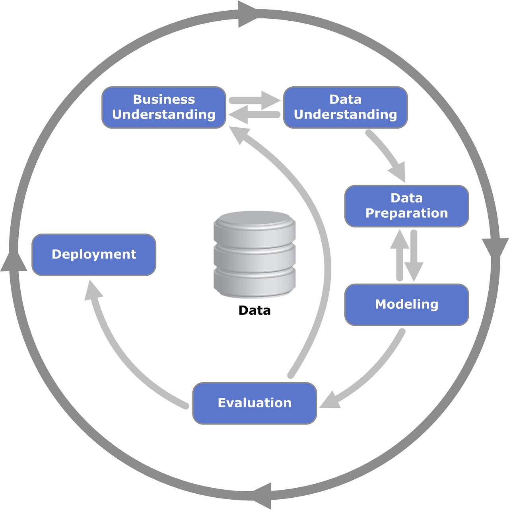
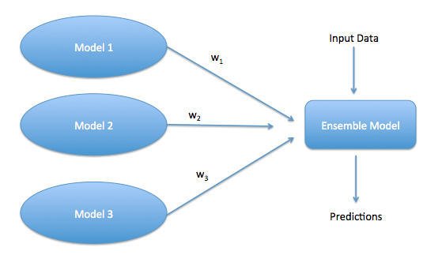

Deployment (I)
ADS320 · Introduction to Data Mining · Week 12
2026-04-07

ADS320 · Introduction to Data Mining
WEEK 12: DEPLOYMENT (I)
Dr Ruiwu Niu | Hong Kong Shue Yan University
April 2026
SYSTEM BOOT: RECAP — WEEK 11

> LOADING PREVIOUS SESSION DATA…
Week 11 covered: Model Evaluation
- Evaluating model results — confusion matrix, ROC-AUC curves, lift charts, and precision-recall trade-offs
- Review processes — cross-validation strategies (k-fold, stratified), holdout sets, and avoiding data leakage
- Updating the model — when evaluation metrics trigger retraining decisions; connecting performance thresholds to operational triggers
- The relationship between evaluation rigour and deployment readiness
- Practical worked examples using crime pattern data (Richmond PD case)
STATUS: Evaluation = the gate between modelling and production.
A model that fails evaluation NEVER reaches deployment.
A model that passes evaluation is [deployment-ready].
McCue, C. (2015). Data mining and predictive analysis (2nd ed.). Butterworth-Heinemann. Ch. 8, 12.
RECAP: THE EVALUATION GATE

The Deployment-Readiness Concept
“A model that passes evaluation is deployment-ready — but deployment is not the end of the story.”
Evaluation determines whether a model is worthy of deployment. It does not guarantee continued performance after deployment.
Key insight: Evaluation is a gate, not a destination.
- Pass the gate → enter deployment
- Fail the gate → return to modelling phase
- Once deployed → monitoring begins
Evaluation ≠ a one-time event
Monitoring ≡ ongoing evaluation in production
Confusion Matrix: Quick Reference
PREDICTED
Pos Neg
ACTUAL
Pos [ TP | FN ]
Neg [ FP | TN ]| Metric | Formula |
|---|---|
| Accuracy | (TP+TN) / N |
| Precision | TP / (TP+FP) |
| Recall | TP / (TP+FN) |
| F1 Score | 2 × P×R / (P+R) |
| AUC-ROC | Area under curve |
High AUC at evaluation ≠ high AUC in production — drift changes everything.
McCue (2015), Ch. 8, 12.
> LOADING AGENDA…

> INITIALISING ADS320 WEEK 12 SESSION…
> STATUS: OK | MODULES: 5 | RUNTIME: 140 min
╔══════════════════════════════════════════════════════════╗ ║ ADS320 W12 — SESSION MENU ║ ╠══════════════════════════════════════════════════════════╣ ║ [01] What Is Deployment? (15 min) ║ ║ [02] Plan Monitoring & Maintenance (55 min) ║ ║ [03] Risk-Based Deployment (45 min) ║ ║ [04] AT2 In-Class Exercise (40 min) ║ ║ [05] Summary & Next Class (10 min) ║ ╚══════════════════════════════════════════════════════════╝
> SELECT MODULE TO BEGIN: _
Learning Outcomes for Today:
- Define deployment in the CRISP-DM framework and explain why it extends beyond “putting a model online”
- Design a monitoring and maintenance plan including drift detection and refresh strategies
- Apply risk-based deployment frameworks to calibrate rollout rigour
- Demonstrate understanding through the AT2 in-class exercise
CRISP-DM: DEPLOYMENT PHASE

CRISP-DM = Cross-Industry Standard Process for Data Mining
Deployment = Phase 6 — the final and most operationally complex phase:
- Business Understanding
- Data Understanding
- Data Preparation
- Modeling
- Evaluation ← Last week
- Deployment ← Today
Deployment ≠ “just putting a model online”
Deployment encompasses:
- Planning — deployment strategy, risk assessment
- Monitoring — performance tracking, drift detection
- Reporting — stakeholder communication, dashboards
- Maintenance — retraining, updating, retiring models
“Deployment without maintenance is a ticking clock.”

Phase 6 objectives:
• Deploy model to production
• Establish monitoring protocol
• Document for reproducibility
• Plan maintenance cycles
McCue (2015), Ch. 13, p. 267. | Studer et al. (2021). Towards CRISP-ML(Q). https://doi.org/10.20944/preprints202103.0135.v1
[WARNING] POST-DEPLOYMENT FAILURES

> SCANNING INCIDENT DATABASE…
[ERROR] AMAZON
Hiring Algorithm
2018
Trained on historical résumés — majority male. Systematically downgraded CVs containing the word “women’s”. Penalised graduates of all-female colleges.
Outcome: Decommissioned after internal discovery. Never used in production decisions.
Root cause: Biased training data + no fairness monitoring post-deployment.
[ERROR] COMPAS
Recidivism Model
ProPublica 2016
Used by US courts to predict criminal recidivism. ProPublica analysis found Black defendants were 2× more likely to be falsely labelled high-risk. White defendants more likely to be mislabelled low-risk.
Outcome: Retired in several US jurisdictions.
Root cause: No bias monitoring; demographic shift in deployment population.
[ERROR] HEALTHCARE
Risk Models
COVID-19 2020
Hundreds of clinical risk models (sepsis, deterioration, readmission) suffered covariate shift during COVID-19. Training distributions from 2015–2019 were incompatible with 2020 patient profiles.
Outcome: Many models suspended; retraining required across institutions.
Root cause: No drift monitoring; no scheduled retraining.
> “Without monitoring, deployment is just a delayed failure.”
MODEL LIFECYCLE: LIVE FEED

> RENDERING MODEL LIFECYCLE STATE MACHINE…
┌─────────┐ ┌─────────┐ ┌────────────────────────┐
│ Build │────▶│ Deploy │────▶│ Monitor │
└─────────┘ └─────────┘ │ (continuous) │
▲ └──────────┬─────────────┘
│ │
│ ┌─────────┐ Drift? │
└───────────│ Retrain │◀── YES ───────┘
└────┬────┘ │
│ NO ────────┘
│ (continue monitoring)
Performance OK?
YES ↓ NO ↓
[Re-deploy] [Retire] ──▶ [Replace]
Monitor — the most critical phase:
- Tracks performance degradation
- Detects data and concept drift
- Triggers retraining decisions
- Generates stakeholder reports
Retrain — four strategies covered today:
- Full retraining
- Incremental learning
- Ensemble updating
- Prior re-balancing
Retire — when no strategy can recover performance
McCue (2015), Ch. 13. | Gama, J., et al. (2014). A survey on concept drift adaptation. ACM Computing Surveys, 46(4). https://doi.org/10.1145/2523813
MONITORING: DEFINITION

> INITIALISING MONITORING SUBSYSTEM…
Model monitoring is the systematic, automated tracking of a deployed model’s behaviour, performance, and data inputs over time — with the goal of detecting degradation before it causes business or safety harm.
Monitoring operates across three layers:
| Layer | What It Tracks | Failure Signals |
|---|---|---|
| Data Quality | Missing values, nulls, distribution shifts, feature correlations | Sudden null spikes, distribution divergence from baseline |
| Model Performance | Accuracy, AUC, F1, precision, recall, calibration | Metric drops below threshold; calibration drift |
| Operational | Latency, throughput, error rates, uptime, API failures | Response time > SLA; error rate spike |
> WHY MONITORING MATTERS:
Models degrade. Data changes. Business contexts evolve.
A model deployed without monitoring is a liability, not an asset.
McCue (2015), Ch. 13. | Pulicharla, M. R. (2019). Detecting and addressing model drift. WJARR, 3(2). https://doi.org/10.30574/wjarr.2019.3.2.0189
DRIFT DETECTED: TWO TYPES

> DRIFT SCANNER ACTIVE — ANALYSING INPUT SPACE…
Data Drift (Covariate Shift)
Definition: The distribution of input features changes after deployment — but the underlying feature→target relationship remains the same.
Mechanism:
P(X) changes → P(Y|X) unchanged
But P(X) change → predictions go wrong
Real Example:
A credit default model trained on 2015–2019 spending patterns meets post-COVID (2020) spending behaviour:
- Remote work expenses ↑
- Travel/hospitality ↓ dramatically
- Income volatility patterns changed
The model didn’t change — the world did.
DETECTION: KL divergence, PSI scores,
Population Stability Index on features
Concept Drift
Definition: The relationship between input features and the target fundamentally changes — the model’s learned mapping becomes invalid.
Mechanism:
P(Y|X) changes → model’s learned function is wrong
Even with same inputs, correct outputs differ
Real Example:
A churn prediction model trained during economic growth (2015–2019):
- Churn signal: “Customer unhappy with service”
- Post-2020 recession: churn signal includes “Customer can’t afford subscription” — different feature importance entirely
DETECTION: Monitor P(Y|X) directly;
compare prediction distributions over time;
track label distribution in incoming data
Types of concept drift:
- Sudden (abrupt change event) - Gradual (slow evolution) - Recurring (seasonal patterns) - Incremental (slow continuous)
Gama, J., Žliobaitė, I., Bifet, A., Pechenizkiy, M., & Bouchachia, A. (2014). A survey on concept drift adaptation. ACM Computing Surveys, 46(4). https://doi.org/10.1145/2523813
CASE STUDY: NETFLIX 2020

> LOADING CASE STUDY: DRIFT IN ACTION…
Context: Netflix’s recommendation engine — trained on years of global viewing behaviour — encountered one of the most severe covariate shifts in commercial ML history.
The Drift Event (March–April 2020):
- COVID-19 lockdowns → user behaviour shifted massively within 2 weeks
- Surge in non-English content (South Korean dramas, Spanish thrillers)
- Documentary spikes — science, history, true crime
- Children’s content dramatically increased (parents working from home)
- Viewing hours per household: +40–60% in many markets
Model Impact:
- Recommendation precision dropped ~8% within 6 weeks without intervention
- User “discovery” scores declined — more users falling back to search
- Regional models diverged significantly from global model assumptions
Netflix’s Response:
1. Accelerated retraining cycles
(weekly → near-daily for
high-drift segments)
2. Ensemble updates with
COVID-period data weighted ↑
3. Regional model differentiation
4. Temporary manual curation
to bridge the gap
Key Lesson:
Continuous monitoring caught the drift early.
Without monitoring, Netflix would have continued serving recommendations calibrated to a world that no longer existed — eroding user trust and retention.
Type of drift: Primarily data drift — user preference distributions shifted; the underlying recommendation logic (similar users like similar content) remained valid.
Concept drift case study. | Gama et al. (2014). https://doi.org/10.1145/2523813
MONITORING PROTOCOL: 6 STEPS

> EXECUTING MONITORING PROTOCOL SETUP…
Define objectives — Who reads the monitoring output? What decisions does it drive?
→ Stakeholder map: data scientist (technical), business owner (outcomes), regulator (compliance)Establish baseline metrics — Record performance at the moment of deployment. This is your reference point.
→ AUC = 0.91, F1 = 0.87, avg. latency = 45ms at launch dateSelect relevant metrics — Three tiers: system metrics + model metrics + business metrics
→ Not every metric is relevant for every use caseSet thresholds and alerts — Absolute thresholds, relative thresholds, and statistical process control
→ “AUC < 0.85” or “10% drop from baseline” triggers investigationDefine monitoring architecture — Batch vs. real-time vs. hybrid
→ Determined by use case risk level and available infrastructureDesign alerting and escalation plan — Who gets alerted? In what timeframe? What is the escalation path?
→ PagerDuty for critical alerts; weekly digest for routine metrics
> CRITICAL PRINCIPLE: Monitoring plans must be agreed BEFORE deployment —
not retrofitted after a problem is discovered.
Evidently AI. (2025). Model monitoring for ML in production. https://www.evidentlyai.com/ml-in-production/model-monitoring | McCue (2015), Ch. 13.
METRICS MATRIX

> LOADING METRICS REGISTRY…
| Category | Metric Examples | Monitoring Frequency | Example Tool |
|---|---|---|---|
| System | Latency (P50/P95/P99), throughput (req/sec), error rate, uptime, memory/CPU | Real-time | Prometheus + Grafana |
| Model Performance | Accuracy, F1, AUC-ROC, precision, recall, calibration, log loss | Daily / Per-batch | MLflow, Weights & Biases |
| Data Quality | Feature distributions vs. baseline, null/missing rates, correlation shifts, PSI | Daily / Weekly | Evidently AI, Great Expectations |
| Business Impact | Decision outcomes, approval rates, revenue impact, customer satisfaction | Weekly / Monthly | Custom dashboards, Tableau |
Selecting the right metrics:
- Start with what matters most to the business
- Add technical metrics to enable debugging
- Don’t track everything — alert fatigue degrades response quality
- PSI (Population Stability Index): standard data drift metric
PSI < 0.1 → stable | 0.1–0.25 → investigate | > 0.25 → significant drift
Common Mistake:
Teams monitor only model accuracy, missing data quality issues upstream. By the time accuracy degrades, the root cause (feature distribution shift) has been present for weeks.
Monitor data → monitor model → monitor business.
Evidently AI (2025). https://www.evidentlyai.com/ml-in-production/model-monitoring | Pulicharla (2019). https://doi.org/10.30574/wjarr.2019.3.2.0189
THRESHOLD CALIBRATION

> CALIBRATING ALERT THRESHOLDS…
Three threshold approaches:
1. Absolute Thresholds
Fixed value: if metric drops below X → alert
Example: if AUC < 0.85 → ALERT
Simple but context-insensitive
2. Relative Thresholds
Percentage change from baseline
Example: if accuracy drops >10% from launch → ALERT
Better for gradual drift detection
3. Statistical Process Control (SPC)
Control charts (Shewhart, CUSUM, EWMA)
Alert when metric crosses 3σ control limits
Best for detecting drift vs. natural variance
Used in manufacturing quality control — now applied to ML monitoring
RULE: Thresholds must be set at
deployment time, not after first alert.
Retrospective threshold-setting is
outcome bias.
Real Example:
Vent.io Clinical ML Model (UCSD Health)
Deployment AUC: 0.908
Threshold set: AUC ≥ 0.85
External validation (MIMIC-IV):
AUC = 0.73 < threshold → ALERT TRIGGERED
Automated response:
PCCP protocol initiated → fine-tuning on new data
Post-fine-tuning AUC: 0.873 ✓
(above threshold — monitoring continues)
This demonstrates a pre-defined threshold enabling automated response — no human had to notice the drop before action was taken.
Lam et al. (2024). JAMIA Open, 7(4), ooae141. https://doi.org/10.1093/jamiaopen/ooae141
ARCHITECTURE: BATCH vs REAL-TIME

> SELECTING MONITORING ARCHITECTURE…
| Dimension | Batch Monitoring | Real-Time Monitoring |
|---|---|---|
| Frequency | Daily / weekly / monthly | Milliseconds to seconds |
| Infrastructure cost | Low — scheduled jobs | High — streaming pipelines |
| Latency tolerance | High | Very low |
| Alerting speed | Slow | Immediate |
| Implementation complexity | Low | High |
| Suitable for | Churn, HR screening, credit models | Fraud detection, clinical AI, ad bidding |
| Example | Quarterly churn model review | JPMorgan Chase real-time fraud detection |
| Tools | Cron + Python + MLflow | Kafka + Flink + Prometheus |
When to choose BATCH:
- Business decisions are not time-critical
- Cost is a primary constraint
- Model outputs are aggregated (e.g., weekly reports)
- Team has limited MLOps infrastructure
When to choose REAL-TIME:
- Errors have immediate consequences (fraud, clinical)
- Model feeds real-time user-facing features
- SLA requirements demand sub-second responses
- Regulatory requirements mandate immediate audit trails
Evidently AI (2025). https://www.evidentlyai.com/ml-in-production/model-monitoring
TOOLCHAIN: MONITORING STACK

> SCANNING AVAILABLE MONITORING TOOLS…
Prometheus + Grafana
Open-source. Industry standard.
- System + model metrics
- Real-time dashboards
- Alertmanager integration
- Kubernetes-native
- Free / self-hosted
Best for: teams with DevOps infrastructure
AWS SageMaker Model Monitor
Cloud-native. Managed service.
- Automated baseline comparison
- Data quality + model quality monitors
- Bias drift detection (Clarify)
- Built-in alert to CloudWatch
- Paid / cloud-only
Best for: AWS-native ML pipelines
Evidently AI
Open-source. ML-focused.
- Drift detection reports
- Data quality dashboards
- Model performance reports
- HTML + JSON output
- Free / self-hosted or cloud
Best for: data science teams needing ML-specific reports fast
Minimal monitoring loop — Python:
# Minimal monitoring loop — production pattern
from sklearn.metrics import accuracy_score
import logging
logging.basicConfig(level=logging.INFO)
def monitor_batch(model, X_new, y_true, threshold=0.85):
"""Monitor a single batch and trigger retraining if needed."""
y_pred = model.predict(X_new)
acc = accuracy_score(y_true, y_pred)
logging.info(f"Batch accuracy: {acc:.4f}")
if acc < threshold:
logging.warning(f"ALERT: accuracy {acc:.4f} < threshold {threshold}")
trigger_retraining() # → initiates retraining pipeline
return accEvidently AI (2025). https://www.evidentlyai.com/ml-in-production/model-monitoring
[EXERCISE_01] MONITORING DESIGN

╔══════════════════════════════════════════════════════════════╗ ║ [EXERCISE_01] IN-CLASS: MONITORING DESIGN (5 minutes) ║ ╠══════════════════════════════════════════════════════════════╣ ║ ║ ║ SCENARIO: ║ ║ A bank deployed a loan default prediction model ║ ║ 6 months ago. ║ ║ ║ ║ Training data period: 2022–2024 ║ ║ Deployment date: October 2025 ║ ║ Current date: April 2026 ║ ║ Context: Interest rates have risen sharply over ║ ║ the past 12 months; borrower demographics shifting. ║ ║ ║ ║ YOUR TASK (5 minutes, individual): ║ ║ ║ ║ > 1. Identify 3 KEY METRICS to track for this model. ║ ║ (At least one from each monitoring layer.) ║ ║ ║ ║ > 2. Set 2 ALERT THRESHOLDS with justification. ║ ║ (Specify: absolute or relative? Why?) ║ ║ ║ ║ > 3. Choose: BATCH or REAL-TIME monitoring? ║ ║ Justify your choice in 2 sentences. ║ ║ ║ ║ > Discuss with neighbour for 2 minutes after. ║ ╚══════════════════════════════════════════════════════════════╝
Hint: Consider the type of drift most likely in this scenario. Is it data drift or concept drift? Both? How does that affect your metric selection?
REFRESH PROTOCOL: 4 STRATEGIES

> LOADING MODEL REFRESH STRATEGIES…
When monitoring detects drift, choose the appropriate refresh strategy:
| Strategy | When to Use | Cost | Risk |
|---|---|---|---|
| Full Retraining | Severe real drift; domain fundamentally changed | High | Low — clean restart |
| Incremental Learning | Streaming environments; continuous data arrival | Medium | Medium — catastrophic forgetting risk |
| Ensemble Updating | Gradual drift; smooth transition needed | Medium | Low — no abrupt replacement |
| Prior Re-balancing | Virtual drift only; P(X) changes, P(Y|X) stable | Very Low | Very Low — cheapest option |
Decision logic:
IF severe real drift AND incremental cannot recover:
→ FULL RETRAINING
ELIF streaming/continuous data:
→ INCREMENTAL LEARNING
ELIF gradual drift AND stability preferred:
→ ENSEMBLE UPDATING
ELIF only input distribution changed (virtual drift):
→ PRIOR RE-BALANCINGKey principle: Choose the least costly strategy that can resolve the drift — escalate only if it fails.
McCue (2015), Ch. 13. | Gama et al. (2014). ACM Computing Surveys. https://doi.org/10.1145/2523813
STRATEGY_01: FULL RETRAINING

> EXECUTING: FULL RETRAINING PROTOCOL
Trigger Conditions — ALL THREE must be satisfied:
CONDITION 1: Performance below defined threshold
(e.g., AUC < 0.82, sustained for >2 monitoring cycles)
CONDITION 2: Incremental update / ensemble update cannot recover performance
(fallback strategies attempted and failed)
CONDITION 3: Domain has fundamentally changed
(new features needed, label definition changed, population shifted)
→ ACTION: FULL RETRAINING INITIATEDFull Retraining Pipeline:
[Collect New Data] → [Preprocess & Validate] → [Full Retrain]
→ [Evaluate on Holdout] → [A/B Test vs. Current Model]
→ [Shadow Run (optional, high-stakes)] → [Deploy New Model]
→ [Archive Old Model Version] → [Reset Monitoring Baseline]Real Example — McCue (2015), Richmond PD Patrol Model:
The Richmond Police Department crime prediction model was seasonally retrained on a scheduled cadence:
- Summer / winter cycle — weather affects patrol patterns and crime geography
- School-in / school-out cycle — juvenile crime patterns shift dramatically in summer
Full retraining was scheduled proactively — not triggered reactively. This is best practice for models with known seasonal patterns.
McCue (2015), Ch. 13.
STRATEGY_02: INCREMENTAL LEARNING

> EXECUTING: INCREMENTAL LEARNING PROTOCOL
Definition: Update the model continuously in small batches as new data arrives — without performing a complete retraining from scratch.
Mechanism:
- New data arrives (stream or micro-batch)
- Model parameters updated incrementally
- No need to retain or reprocess historical data
- Especially suitable for: clickstream, sensor data, financial ticks, user interactions
Suitable environments:
- Streaming platforms (real-time recommendation)
- IoT sensor networks
- Fraud detection with continuous transactions
- Online advertising bidding systems
Critical Risk: Catastrophic Forgetting
When only recent data is used, the model may “forget” patterns from older but still-valid historical data — especially problematic for rare events (fraud, rare diseases).
Mitigation: Elastic Weight Consolidation (EWC)
- Adds a regularisation penalty to prevent old knowledge from being overwritten
- Slows learning rate for parameters that were important for past tasks
Real Example:
Amazon e-commerce — product embedding models updated nightly from new purchase data. Incremental updates ensure recommendations reflect recent trends without discarding years of purchase history.
Gama et al. (2014). ACM Computing Surveys, 46(4). https://doi.org/10.1145/2523813
STRATEGY_03: ENSEMBLE UPDATING

> EXECUTING: ENSEMBLE UPDATING PROTOCOL
Mechanism:
When drift is gradual, rather than replacing the current model entirely, add a new model (trained on recent data) to an ensemble — and progressively reduce the weight of older models.
How it works:
INITIAL STATE:
Ensemble = [Model_v1 (w=1.0)]
DRIFT DETECTED (gradual):
Train Model_v2 on recent data
Ensemble = [Model_v1 (w=0.6),
Model_v2 (w=0.4)]
CONTINUED DRIFT:
Ensemble = [Model_v1 (w=0.3),
Model_v2 (w=0.7)]
EVENTUALLY:
Retire Model_v1
Ensemble = [Model_v2 (w=1.0)]
(or add Model_v3...)Advantages:
- Smooth transition — no abrupt model replacement; no “cliff” in performance
- Preserves historical signal during transition
- Can be rolled back easily by adjusting weights
- Reduces risk of new-model failure causing production incidents
Disadvantage: Complexity increases; maintaining multiple model versions adds operational overhead.

Real Example:
ECMWF (European Centre for Medium-Range Weather Forecasts)
Global weather forecasting uses large multi-model ensembles. When seasonal patterns shift (e.g., El Niño onset), newer models capturing current atmospheric patterns receive higher weights while older seasonal baselines are gradually phased out — without disrupting the operational forecast chain.
Gama et al. (2014). ACM Computing Surveys. https://doi.org/10.1145/2523813
STRATEGY_04: PRIOR RE-BALANCING

> EXECUTING: PRIOR RE-BALANCING PROTOCOL
Mechanism — addressing Virtual Drift only:
VIRTUAL DRIFT = Input distribution changes (P(X) shifts)
BUT feature→target relationship is UNCHANGED (P(Y|X) stable)
In this case: model's LEARNED WEIGHTS remain valid
Only the CLASS PRIORS / WEIGHTS need adjustment
SOLUTION: Re-balance class weights or posterior probabilities
WITHOUT retraining the model's core parametersWhen this applies:
Credit Scoring — Economic Expansion Example:
- Model trained 2019: 30% high-income applicants, 70% low-income
- Economy improves 2022: 50% high-income applicants, 50% low-income
- The signal (what predicts default) hasn’t changed
- The proportion of applicants in each class has changed
- Solution: Adjust class weights to reflect new application pool distribution
- No retraining of model parameters needed
Result: Correct calibration restored at minimal cost
Why this is the BEST first option:
| Attribute | Prior Re-balancing |
|---|---|
| Compute cost | Near zero |
| Time to implement | Hours |
| Risk | Very low |
| Requires new labels? | No |
| Requires retraining? | No |
Always try prior re-balancing FIRST when only the input distribution has shifted — escalate to full retraining only if this fails.
McCue (2015), Ch. 13. | Gama et al. (2014). https://doi.org/10.1145/2523813
[SYSTEM_HALT] RETIREMENT CRITERIA

> RETIREMENT ASSESSMENT PROTOCOL INITIATED…
╔══════════════════════════════════════════════════════════════╗ ║ [SYSTEM_HALT] RETIREMENT CRITERIA — THREE-CONDITION RULE ║ ╠══════════════════════════════════════════════════════════════╣ ║ ║ ║ X CONDITION 1: Performance persistently below threshold ║ ║ (e.g., AUC < 0.80 for 3+ consecutive monitoring cycles) ║ ║ ║ ║ X CONDITION 2: All refresh strategies attempted and failed ║ ║ (prior re-balancing → ensemble update → incremental ║ ║ → full retrain — none recovered performance) ║ ║ ║ ║ X CONDITION 3: Domain has fundamentally changed ║ ║ (new regulatory framework, feature unavailable, ║ ║ business objective redefined) ║ ║ ║ ║ ───────────────────────────────────────────────────────── ║ ║ → ACTION: RETIRE MODEL → INITIATE REPLACEMENT PIPELINE ║ ╚══════════════════════════════════════════════════════════════╝
Retirement Checklist:
- Document model lineage — full audit trail of versions, training data, performance history
- Archive training data — with version tags and data provenance records
- Stakeholder sign-off — business owner, legal/compliance, data science lead
- Rollback plan — can the previous model be re-activated if needed?
- Communication plan — internal teams + affected external parties notified
Real Example: COMPAS Recidivism Tool
After ProPublica’s 2016 fairness analysis and subsequent academic scrutiny, the COMPAS recidivism scoring tool was retired from use in several US jurisdictions — including decisions in Wisconsin and New Jersey courts. Retirement required legislative action, court orders, and public documentation of model failures.
McCue (2015), Ch. 13.
LIFECYCLE: COMPLETE STATE MACHINE

> RENDERING COMPLETE LIFECYCLE STATE MACHINE…
╔══════════╗ ╔══════════╗ ╔════════════════════════════════╗
║ [Build] ║───▶║ [Deploy] ║───▶║ [Monitor] (continuous loop) ║
╚══════════╝ ╚══════════╝ ╚════════════┬═══════════════════╝
Data Scientist MLOps Eng. │
Business Owner IT Ops ▼
Drift detected?
┌────────────────────────┐
│ NO → Continue │
│ YES ▼ │
│ Type of drift? │
│ Virtual → [Re-balance]│
│ Gradual → [Ensemble] │
│ Streaming→[Incremental│
│ Severe → [Retrain] │
└──────────┬─────────────┘
▼
Performance recovers?
YES ↓ NO ↓
[Re-deploy] [Retire]──▶[Replace]
Data Scientist Business Owner
MLOps Eng. + Legal/Compliance
Typical timelines by stage:
| Stage | Typical Duration | Key Role |
|---|---|---|
| Build (initial) | 2–8 weeks | Data Scientist |
| Deployment | 1–4 weeks | MLOps Engineer |
| Monitoring cycle | Continuous / daily | MLOps + Data Scientist |
| Retraining decision | Days to weeks after alert | Data Scientist + Business Owner |
| Retirement decision | Weeks (requires sign-off) | Business Owner + Legal |
McCue (2015), Ch. 13. | Gama et al. (2014). https://doi.org/10.1145/2523813
AUDIT LOG: GOVERNANCE

> ACCESSING GOVERNANCE MODULE…
Why documentation and governance matter:
Reproducibility
Can you recreate exact model results 2 years after deployment? This matters for:
- Regulatory audits (what decision was made and why?)
- Debugging unexpected model behaviour
- Onboarding new team members
- Litigation / legal discovery
Auditing
Regulators increasingly demand model cards — structured documentation of:
- Intended use and out-of-scope uses
- Training data description and limitations
- Performance metrics across demographic groups
- Known biases and mitigation strategies
Compliance
- GDPR (EU): Right to explanation for automated decisions; data minimisation; purpose limitation
- HK PDPO: Personal Data (Privacy) Ordinance — same principles applied locally; consent and data retention obligations
What to document — minimum requirements:
DOCUMENTATION CHECKLIST:
□ Training data: source, version, date range
□ Data preprocessing pipeline (reproducible)
□ Model architecture + hyperparameters
□ Performance at deployment (baseline)
□ Evaluation methodology used
□ Known limitations and biases
□ Monitoring schedule + thresholds
□ Retraining history with dates + triggers
□ Model version control (git tags)
□ Stakeholder sign-off records
□ Retirement criteria (pre-defined)EU AI Act (2024):
High-risk AI systems (credit scoring, employment, healthcare, law enforcement) require:
- Continuous monitoring logs
- Human oversight mechanisms
- Conformity assessments before deployment
- Incident reporting within 15 days
Non-compliance: fines up to €30M or 6% global revenue.
McCue (2015), Ch. 13.
CASE STUDY: VENT.IO @ UCSD HEALTH

> LOADING CLINICAL AI CASE STUDY…
Model Background:
- Task: Real-time prediction of mechanical ventilation need in ICU patients
- Training data: UCSD Health EHR — adult ICU patients
- Features: Vital signs, labs, medications, nursing assessments (time-series)
- Algorithm: Gradient boosting with temporal features
Deployment Performance:
| Phase | AUC | Status |
|---|---|---|
| Internal validation | 0.931 | Development |
| Prospective deployment | 0.908 | Production ✓ |
| MIMIC-IV external | 0.730 | ALERT ❌ |
| Post-fine-tuning | 0.873 | Restored ✓ |
Alert threshold: AUC ≥ 0.85
The drop to 0.73 on external data triggered the Physician-in-the-loop Continuous Care Pathway (PCCP) protocol.
Monitoring Trigger Chain:
[Prospective Deployment]
AUC = 0.908 > threshold ✓
↓
MIMIC-IV External Validation
AUC = 0.730 < threshold 0.85
↓
[ALERT: PCCP TRIGGERED]
↓
Fine-tuning on target domain data
↓
AUC = 0.873 > threshold ✓
↓
[MODEL RE-VALIDATED — CONTINUE]Key Lessons:
- Pre-defined retraining triggers = automated response without human delay
- External validation is part of ongoing monitoring — not just development
- Domain-specific fine-tuning (not full retraining) was sufficient
- Governance framework (PCCP) enabled sustainable deployment
“Pre-defined retraining triggers + governance = sustainable deployment”
Lam et al. (2024). Development, deployment, and continuous monitoring of a ML model to predict respiratory failure. JAMIA Open, 7(4), ooae141. https://doi.org/10.1093/jamiaopen/ooae141
RISK PROTOCOL: DEFINITION

> INITIALISING RISK-BASED DEPLOYMENT MODULE…
“Calibrate deployment rigor, monitoring intensity, and rollout speed to the risk level of the use case.”
Core Principle: NOT all models need the same safeguards.
Risk-based deployment means right-sizing your deployment process to the potential harm of failure:
| Use Case | Risk Level | Implication |
|---|---|---|
| Playlist recommendation | LOW | Fast deploy, minimal monitoring |
| Product search ranking | LOW-MEDIUM | Standard monitoring |
| Fraud detection | MEDIUM-HIGH | Phased rollout + alerts |
| Loan approval | HIGH | Shadow mode + audit |
| Clinical diagnostic AI | VERY HIGH | Phased + shadow + regulatory approval |
| Criminal justice AI | VERY HIGH | Regulatory oversight + fairness audit |
Why risk calibration matters:
- Over-engineering low-risk deployments wastes resources and slows innovation
- Under-engineering high-risk deployments causes harm, legal liability, and reputational damage
- Risk level affects: rollout strategy, monitoring frequency, alert thresholds, documentation requirements, regulatory obligations
RISK CALIBRATION EQUATION:
Deployment Rigor =
f(Impact of Failure × Uncertainty)
McCue (2015), Ch. 13. | Piorkowski, D., Hind, M., & Richards, J. (2024). Quantitative AI risk assessments. https://doi.org/10.48550/arXiv.2209.06317
RISK MATRIX: 2×2 QUADRANT

> RENDERING RISK QUADRANT MATRIX…
| Low Uncertainty | High Uncertainty | |
|---|---|---|
| High Impact | Standard monitoring Churn prediction, targeted marketing | Phased rollout + intensive monitoring Credit scoring, clinical AI, hiring models |
| Low Impact | Fast deploy, minimal monitoring Product search ranking, playlist recommendation | Controlled pilot New content recommendation, experimental features |
How to classify your model:
- Impact = severity of harm if the model fails (financial, safety, fairness, reputational)
- Uncertainty = how well-understood the deployment environment is relative to training conditions
Quadrant Action Plans:
HIGH IMPACT + LOW UNCERTAINTY:
→ Standard rollout
→ Automated monitoring
→ Quarterly audit
HIGH IMPACT + HIGH UNCERTAINTY:
→ Shadow mode first
→ Phased rollout (10%→50%→100%)
→ Real-time monitoring
→ Fairness audit
→ Regulatory clearance
LOW IMPACT + LOW UNCERTAINTY:
→ Big bang deploy
→ Batch monitoring weekly
→ Annual review
LOW IMPACT + HIGH UNCERTAINTY:
→ Controlled pilot (5%)
→ A/B test with clear metrics
→ Expand if results holdPiorkowski et al. (2024). https://doi.org/10.48550/arXiv.2209.06317 | McCue (2015), Ch. 13.
RISK SCANNER: FOUR CATEGORIES

> RISK IDENTIFICATION SCAN RUNNING…
1. DATA RISK
Definition: Risks from the training data itself
Examples: • Stale data (pre-COVID model in 2025) • Biased training data (skewed demographics) • Insufficient volume (rare event models) • Label quality issues • Data leakage (future info in training) • Privacy violations in data collection
2. MODEL RISK
Definition: Risks from the model itself
Examples: • Overfitting to training distribution • Inappropriate algorithm for domain • Unstable predictions near decision boundary • Lack of interpretability in regulated domain • Hyperparameter sensitivity
3. OPERATIONAL RISK
Definition: Risks from infrastructure and operations
Examples: • Infrastructure failure / downtime • Latency exceeding SLA • Integration failures with upstream data • Version mismatch (model vs. feature pipeline) • Security vulnerabilities (adversarial inputs) • Human error in deployment process
4. ETHICAL / COMPLIANCE RISK
Definition: Risks from fairness, privacy, and regulation
Examples: • Differential impact across demographic groups • GDPR / PDPO non-compliance • Lack of human oversight for high-risk decisions • Violation of sector-specific regulation (HIPAA, FCA) • Transparency / explainability failures
CASE: Amazon Rekognition (commercial deployment) → Higher error rates for women + darker-skinned subjects → Discovered post-deployment via academic audit
Piorkowski et al. (2024). https://doi.org/10.48550/arXiv.2209.06317
RISK SCORING: TEMPLATE

> LOADING RISK ASSESSMENT TEMPLATE…
Risk Assessment Matrix — complete before deployment:
| Risk Category | Risk Description | Likelihood (1–5) | Impact (1–5) | Risk Score (L×I) | Mitigation Strategy |
|---|---|---|---|---|---|
| Data Risk | Training data 2015–2019 only; post-2020 patterns not captured | 4 | 5 | 20 | Augment with 2020–2023 data; schedule annual full retraining |
| Model Risk | Gender imbalance in training set → biased outcomes | 3 | 5 | 15 | Fairness audit pre-deployment; demographic parity monitoring |
| Operational Risk | Integration with legacy CRM system unstable | 3 | 3 | 9 | API wrapper + fallback rule-based system |
| Ethical Risk | Regulatory framework may change (EU AI Act 2024) | 2 | 4 | 8 | Legal review; modular architecture for compliance updates |
| Data Quality | Input feature null rate >5% in some regions | 2 | 3 | 6 | Imputation pipeline; alert if null rate > 8% |
Risk Score Interpretation:
Score 20–25: CRITICAL → Do not deploy without mitigation
Score 12–19: HIGH → Phased rollout; intensive monitoring required
Score 6–11: MEDIUM → Standard monitoring; document and track
Score 1– 5: LOW → Fast deploy; routine monitoringStudents will complete 2 rows of this template in Exercise 2.
Piorkowski et al. (2024). https://doi.org/10.48550/arXiv.2209.06317 | McCue (2015), Ch. 13.
DEPLOYMENT STRATEGIES: 5 MODES

> SCANNING DEPLOYMENT STRATEGY OPTIONS…
Big Bang — All users switched to new model simultaneously.
Speed: Fastest | Risk: Highest | Rollback: Hardest
Use when: low-risk model, well-tested, fast rollback availablePhased Rollout — Deploy region by region, segment by segment (e.g., 10% → 25% → 50% → 100%).
Speed: Moderate | Risk: Moderate | Rollback: Manageable
Use when: medium-high risk, want to validate performance before full exposureShadow Mode — New model runs in parallel; its outputs are logged but NOT acted upon. Production uses old model.
Speed: Slow | Risk: Minimal | Rollback: Trivial
Use when: very high stakes, need extended real-world validation before any live decisionsA/B Testing — Split users: control group (old model) vs. treatment group (new model). Compare statistically.
Speed: Moderate | Risk: Low-Medium | Rollback: Easy
Use when: want statistical confidence before full deployment; clear primary metric definedCanary Deployment — Route a small % of traffic (1–5%) to new model first; monitor intensively; expand if stable.
Speed: Moderate-Slow | Risk: Low | Rollback: Easy
Use when: infrastructure risk is the primary concern; want to catch technical failures early
Risk Tolerance vs. Deployment Speed Matrix:
| Strategy | Risk Tolerance | Deployment Speed | Monitoring Intensity |
|---|---|---|---|
| Big Bang | High | Very Fast | Low |
| Canary | Low-Medium | Slow | Very High |
| A/B Test | Medium | Moderate | High |
| Phased | Medium | Moderate | Medium |
| Shadow | Very Low | Very Slow | Medium |
SHADOW_MODE: PARALLEL EXECUTION

> SHADOW MODE PROTOCOL: EXECUTING…
┌──────────────────────┐
│ User Request │
└──────────┬───────────┘
│
┌───────────────┴──────────────────┐
▼ ▼
┌─────────────────────┐ ┌─────────────────────┐
│ OLD MODEL (v1) │ │ NEW MODEL (v2) │
│ [PRODUCTION] │ │ [SHADOW] │
└──────────┬──────────┘ └──────────┬──────────┘
│ │
▼ ▼
Production Decision Output LOGGED only
→ Sent to User → NOT acted upon
→ Compared to v1
┌──────────────────────────┐
│ Data Scientists analyse │
│ shadow outputs daily: │
│ • Agreement rate │
│ • Edge case differences │
│ • Performance on labels │
└──────────────────────────┘
When to use Shadow Mode:
- High-stakes models where live errors cause irreversible harm (clinical, financial, legal)
- New model uses significantly different architecture
- Regulatory approval required before live use
- Team needs extended confidence-building period
Transition Criteria:
Shadow-run for N consecutive days meeting agreement threshold before any live traffic is routed to new model.
Real Example:
Google Search Ranking
New ranking models shadow-run for weeks to months before any live traffic is redirected. Outputs are compared against production rankings across billions of queries. Only after sustained agreement and quality metrics are met does the new model begin receiving live traffic — initially via canary, then phased rollout.
Scale of shadow operation: ~8.5 billion queries/day.
McCue (2015), Ch. 13. | Piorkowski et al. (2024). https://doi.org/10.48550/arXiv.2209.06317
A/B TEST: STATISTICAL FRAMEWORK

> A/B TEST FRAMEWORK INITIALISING…
Framework for statistically rigorous A/B testing in model deployment:
Steps:
- Split population — random assignment, e.g., 90% control (old model) / 10% treatment (new model)
- Define primary metric — e.g., click-through rate, 7-day retention, AUC on live labels
- Set significance parameters:
- α = 0.05 (5% false positive rate)
- Minimum Detectable Effect (MDE): smallest difference that matters
- Required sample size (power calculation: β = 0.20, power = 80%)
- Run for pre-defined duration — never stop early based on peeking at results (p-hacking)
- Analyse and decide — apply t-test or equivalent; compare to α threshold
# A/B test significance check
from scipy import stats
control_outcomes = [...] # Old model outcomes
treatment_outcomes = [...] # New model outcomes
t_stat, p_value = stats.ttest_ind(
control_outcomes,
treatment_outcomes
)
if p_value < 0.05:
print(f"Significant! p={p_value:.4f}")
print("→ Deploy new model")
else:
print(f"Not significant (p={p_value:.4f})")
print("→ Keep old model")Real Example: Spotify
New neural collaborative filtering recommendation model tested against existing collaborative filtering baseline:
- Test design: 90% control / 10% treatment
- Duration: 7 days (pre-specified)
- Primary metric: 7-day retention rate
- Result: +2.4% retention, p < 0.01
Decision: Deploy new model → began phased rollout over 3 weeks
Common A/B Testing Pitfalls:
❌ Stopping early (p-hacking)
❌ Multiple testing without correction
❌ Novelty effects inflating results
❌ Network effects (treatment leaks
to control via social graph)
❌ Seasonality bias (running tests
across holiday periods)McCue (2015), Ch. 13.
ROLLBACK PROTOCOL: EMERGENCY PROCEDURE

> LOADING ROLLBACK PROTOCOL…
╔══════════════════════════════════════════════════════════════╗ ║ [EMERGENCY] ROLLBACK PROTOCOL — 4 COMPONENTS ║ ╠══════════════════════════════════════════════════════════════╣ ║ ║ ║ 1. TRIGGER CRITERIA ║ ║ → Specific metric thresholds that auto-trigger rollback ║ ║ → Example: AUC drops >15% from baseline in <48h ║ ║ → Example: Error rate > 5× baseline for 30 minutes ║ ║ → Example: P99 latency > 3× SLA threshold ║ ║ ║ ║ 2. PROCEDURE ║ ║ → Version control: tag all model artifacts (git, DVC) ║ ║ → Container images: previous model image tagged + stored ║ ║ → Database: feature pipeline state snapshot at deploy ║ ║ → Target: restore previous version in <30 minutes ║ ║ ║ ║ 3. OWNER ║ ║ → Designated person with rollback authority (on-call) ║ ║ → Backup owner (24/7 coverage) ║ ║ → Escalation path if owner unavailable ║ ║ ║ ║ 4. COMMUNICATION PLAN ║ ║ → Internal: engineering + business owner notified <5 min ║ ║ → External: customer-facing notification if SLA breached ║ ║ → Post-mortem: within 48h of rollback completion ║ ╚══════════════════════════════════════════════════════════════╝
Real Example: Meta Newsfeed Algorithm Rollback (2021)
After a major algorithm update reduced engagement metrics significantly, Meta’s pre-defined trigger criteria were met within hours. The rollback was completed within 48 hours using pre-tagged container versions — demonstrating how rollback infrastructure investments pay off.
McCue (2015), Ch. 13. | Piorkowski et al. (2024). https://doi.org/10.48550/arXiv.2209.06317
[EXERCISE_02] RISK ASSESSMENT

╔══════════════════════════════════════════════════════════════╗ ║ [EXERCISE_02] IN-CLASS: RISK ASSESSMENT (11 minutes) ║ ╠══════════════════════════════════════════════════════════════╣ ║ ║ ║ SCENARIO: ║ ║ A Hong Kong insurance company wants to deploy an ML model ║ ║ to AUTOMATICALLY APPROVE OR REJECT life insurance ║ ║ applications — no human review in the loop. ║ ║ ║ ║ Training data: 2018–2022 (pre-pandemic) ║ ║ Model: XGBoost classifier ║ ║ Features: age, income, medical history, lifestyle factors ║ ║ Jurisdiction: Hong Kong (PDPO applies; UK-style reg. frame) ║ ║ ║ ║ YOUR TASK (8 min individual): ║ ║ ║ ║ > 1. Classify the risk level using the 2×2 Risk Matrix. ║ ║ Which quadrant? Why? (2–3 sentences) ║ ║ ║ ║ > 2. Choose a DEPLOYMENT STRATEGY from the 5 options. ║ ║ Justify your choice. (2–3 sentences) ║ ║ ║ ║ > 3. Complete 2 rows of the Risk Assessment Table: ║ ║ [Category] [Description] [L] [I] [Score] [Mitigation] ║ ║ ║ ║ → 3 minutes: discuss with a partner. ║ ╚══════════════════════════════════════════════════════════════╝
Consider: What regulations apply? What is the cost of a wrong decision? Can this decision be reversed? What does PDPO require?
COMPLIANCE TERMINAL: REGULATIONS

> LOADING REGULATORY COMPLIANCE DATABASE…
EU AI Act (2024)
First comprehensive AI regulation globally
Risk Classification:
| Level | Definition | Examples |
|---|---|---|
| Unacceptable | Prohibited | Social scoring, subliminal manipulation |
| High | Strict requirements | Credit, employment, healthcare AI |
| Limited | Transparency only | Chatbots (disclose AI) |
| Minimal | No requirements | Spam filters, AI games |
Requirements for HIGH-RISK AI:
- Conformity assessment before deployment
- Human oversight mechanisms
- Continuous monitoring logs
- Incident reporting within 15 business days
- Technical documentation maintained
Penalties: Up to €30M or 6% of global annual revenue
HK PDPO
Personal Data (Privacy) Ordinance
Six Data Protection Principles:
- Purpose and collection — data collected for lawful, specified purpose
- Accuracy and retention — kept accurate, not longer than necessary
- Use of data — only for collection purpose or directly related
- Security — technical and organisational safeguards
- Openness — individual’s rights to know about data use
- Access and correction — right to access and correct personal data
ML Implications:
- Data minimisation — only collect features necessary for the model’s purpose
- Purpose limitation — cannot repurpose training data without new consent
- Automated decision-making — individuals may request human review
- Profiling with sensitive categories (health, ethnicity) requires enhanced safeguards
Dual-framework compliance required for HK companies operating in or serving EU markets — both PDPO and EU AI Act obligations must be met simultaneously.
BIAS SCANNER: ACTIVE

> INITIALISING FAIRNESS MONITORING MODULE…
Bias in ML is not static — it can emerge or worsen post-deployment as the deployment population’s demographics shift.
Key Fairness Metrics to Monitor:
| Metric | Definition | Formula |
|---|---|---|
| Demographic Parity | Positive prediction rate equal across groups | P(ŷ=1|A=0) = P(ŷ=1|A=1) |
| Equalized Odds | Equal TPR and FPR across groups | TPR and FPR equal for all A |
| Predictive Parity | Equal precision across groups | P(y=1|ŷ=1,A=0) = P(y=1|ŷ=1,A=1) |
| Individual Fairness | Similar individuals receive similar outcomes | d(x,x’) small → d(ŷ,ŷ’) small |
Implementation:
- Run fairness audits at deployment AND on a rolling basis (monthly/quarterly)
- Stratify performance metrics by protected attributes
- Use tools: IBM AI Fairness 360, Microsoft Fairlearn, Google What-If Tool
Note: Fairness metrics often conflict with each other — trade-offs must be explicitly documented and justified with domain experts.
Case: COMPAS Recidivism Tool
Northpointe / Equivant
Used by US courts to predict likelihood of reoffending to guide bail and sentencing decisions.
ProPublica Analysis (2016):
- Black defendants: 2× more likely to be falsely labelled high-risk
- White defendants: more likely to be falsely labelled low-risk
- Overall accuracy: 65%
The model was deployed with no ongoing fairness monitoring. The bias was only discovered through external investigative journalism.
Lesson:
Bias monitoring must be a STANDING COMPONENT of every deployment plan — not an afterthought.
Retirement followed in multiple jurisdictions.
Piorkowski et al. (2024). https://doi.org/10.48550/arXiv.2209.06317
GOVERNANCE FRAMEWORK: AIM-PRISM

> LOADING AIM-PRISM GOVERNANCE FRAMEWORK…
AIM-PRISM — a comprehensive 8-component governance framework for sustainable ML deployment:
| A | I | M | P |
|---|---|---|---|
| Adaptability | Integration | Monitoring | Predictive Capacity |
| Model can update as environment changes; refresh strategies defined | System integrates with existing workflows and data pipelines without disruption | Continuous performance, data, and fairness tracking with alert protocols | Anticipates future failure modes before they occur; proactive governance |
| R | I | S | M |
|---|---|---|---|
| Responsiveness | Inclusivity | Security | Meaningful Interpretation |
| Rapid response to detected issues; escalation paths defined and tested | Deployment accounts for diverse user populations; fairness-by-design | Model and data pipeline secured against adversarial inputs, data poisoning, model inversion | Outputs are explainable and actionable for decision-makers; XAI methods applied |
> AIM-PRISM provides a STRUCTURED CHECKLIST for governance teams
to audit any ML deployment against 8 dimensions.
> Use as both a pre-deployment assessment AND ongoing audit framework.
Al-Thani, M. G. (2025). The AIM-PRISM framework. AI, Machine Learning and Applications. https://doi.org/10.54364/aaiml.2025.53228
AT2: IN-CLASS EXERCISE — DEPLOYMENT (I)

╔══════════════════════════════════════════════════════════════╗ ║ ADS320 AT2: IN-CLASS EXERCISE — WEEK 12 ║ ╠══════════════════════════════════════════════════════════════╣ ║ ║ ║ > SYSTEM: Initialising Assessment Module... ║ ║ > STATUS: READY ║ ║ ║ ║ FORMAT : Individual | Handwritten | No notes ║ ║ DURATION: 15 minutes ║ ║ MARKS : 5 questions × 2 marks = 10 marks total ║ ║ SUBMIT : Before leaving class today ║ ║ ║ ║ COUNT : Contributes to 5 selected AT2 exercises ║ ║ (best 5 of all in-class exercises) ║ ║ ║ ║ > Please write your: ║ ║ - Full name ║ ║ - Student ID ║ ║ - Date ║ ║ on the answer sheet before beginning. ║ ║ ║ ║ > BEGIN WHEN INSTRUCTED ║ ╚══════════════════════════════════════════════════════════════╝
Assessment covers: Model drift types · Refresh strategies · AUC degradation response · Shadow mode vs A/B testing · Risk quadrant classification
AT2: QUESTION BANK

╔══════════════════════════════════════════════════════════════╗ ║ AT2 QUESTIONS — Week 12: Deployment (I) ║ ╠══════════════════════════════════════════════════════════════╣ ║ ║ ║ Q1 [2 marks] ║ ║ Name and describe TWO types of model drift. ║ ║ For each type, provide ONE real-world example. ║ ║ ║ ║ Q2 [2 marks] ║ ║ Complete the table: name all FOUR model refresh strategies, ║ ║ the primary condition that triggers each, and one ║ ║ real-world context where each is appropriate. ║ ║ ║ ║ Q3 [2 marks] ║ ║ A deployed fraud detection model's AUC dropped from ║ ║ 0.94 to 0.79 over one week. List TWO immediate actions ║ ║ a data scientist should take. Justify each. ║ ║ ║ ║ Q4 [2 marks] ║ ║ Explain the difference between shadow mode deployment ║ ║ and A/B testing. In which situation would you choose ║ ║ shadow mode over A/B testing? Give a reason. ║ ║ ║ ║ Q5 [2 marks] ║ ║ A Hong Kong company is deploying an ML model to screen ║ ║ job applicants. Using the 2×2 risk matrix, classify ║ ║ the risk level and justify in 2–3 sentences. ║ ║ ║ ╚══════════════════════════════════════════════════════════════╝
SYSTEM SUMMARY: KEY OUTPUTS

> COMPILING SESSION OUTPUTS…
╔══════════════════════════════════════════════════════════════╗ ║ ADS320 W12 — SESSION SUMMARY ║ ╠══════════════════════════════════════════════════════════════╣ ║ ║ ║ [01] Monitoring is not optional — ║ ║ it is PART OF THE DEPLOYMENT CONTRACT. ║ ║ A model without monitoring is a liability. ║ ║ ║ ║ [02] Match refresh strategy to drift type and severity: ║ ║ Virtual drift → Prior re-balancing (cheapest) ║ ║ Gradual drift → Ensemble updating (smooth) ║ ║ Streaming → Incremental learning (continuous) ║ ║ Severe drift → Full retraining (clean restart) ║ ║ ║ ║ [03] Risk-based deployment = calibrate rigor to STAKES. ║ ║ Playlist ≠ clinical AI. ║ ║ Use the 2×2 matrix. Choose the right strategy. ║ ║ ║ ║ [04] Governance + documentation = ║ ║ SUSTAINABLE vs FRAGILE deployment. ║ ║ Reproducibility · Auditability · Compliance. ║ ║ AIM-PRISM provides the framework. ║ ║ ║ ╚══════════════════════════════════════════════════════════════╝
> SESSION COMPLETE. LOGGING OUT…
NEXT SESSION: DEPLOYMENT (II)

╔══════════════════════════════════════════════════════════════╗ ║ > LOADING NEXT MODULE... ║ ║ > MODULE: ADS320 Week 13 — DEPLOYMENT (II) ║ ║ > STATUS: QUEUED ║ ╠══════════════════════════════════════════════════════════════╣ ║ ║ ║ TOPIC: Visualization & Reporting ║ ║ ║ ║ CONTENT PREVIEW: ║ ║ • Deployment report structure and key components ║ ║ • Dashboard design for non-technical stakeholders ║ ║ • Communicating model performance visually ║ ║ • Lift charts, gain charts, and business ROI reporting ║ ║ • Final project preparation and wrap-up ║ ║ ║ ║ READING: ║ ║ McCue (2015), Ch. 13 (complete) ║ ║ ║ ║ AT2 EXERCISE W13: ║ ║ Result visualizations and deployment report generation ║ ║ ║ ║ > REMINDER: Submit today's AT2 exercise before leaving. ║ ║ ║ ╚══════════════════════════════════════════════════════════════╝
Prepare: Review your Week 12 notes. Bring any questions about monitoring or risk assessment strategies to Week 13. Next class is the last full content session before the final assessment.
BIBLIOGRAPHY: VERIFIED SOURCES

> ACCESSING REFERENCE DATABASE…
McCue, C. (2015). Data mining and predictive analysis: Intelligence gathering and crime analysis (2nd ed.). Butterworth-Heinemann.
Gama, J., Žliobaitė, I., Bifet, A., Pechenizkiy, M., & Bouchachia, A. (2014). A survey on concept drift adaptation. ACM Computing Surveys, 46(4), Article 44. https://doi.org/10.1145/2523813
Lam, J. Y., Lu, X., Shashikumar, S., Lee, Y. S., Miller, M., Pour, H., Boussina, A., Pearce, A., Malhotra, A., & Nemati, S. (2024). Development, deployment, and continuous monitoring of a machine learning model to predict respiratory failure in critically ill patients. JAMIA Open, 7(4), ooae141. https://doi.org/10.1093/jamiaopen/ooae141
Pulicharla, M. R. (2019). Detecting and addressing model drift: Automated monitoring and real-time retraining in ML pipelines. World Journal of Advanced Research and Reviews, 3(2). https://doi.org/10.30574/wjarr.2019.3.2.0189
Studer, S., Bui, T., Drescher, C., Hanuschkin, A., Winkler, L., Peters, S., & Müller, K.-R. (2021). Towards CRISP-ML(Q): A machine learning process model with quality assurance methodology. Preprints. https://doi.org/10.20944/preprints202103.0135.v1
Piorkowski, D., Hind, M., & Richards, J. (2024). Quantitative AI risk assessments: Opportunities and challenges. https://doi.org/10.48550/arXiv.2209.06317
Al-Thani, M. G. (2025). The AIM-PRISM framework. AI, Machine Learning and Applications. https://doi.org/10.54364/aaiml.2025.53228
Evidently AI. (2025). Model monitoring for ML in production. https://www.evidentlyai.com/ml-in-production/model-monitoring